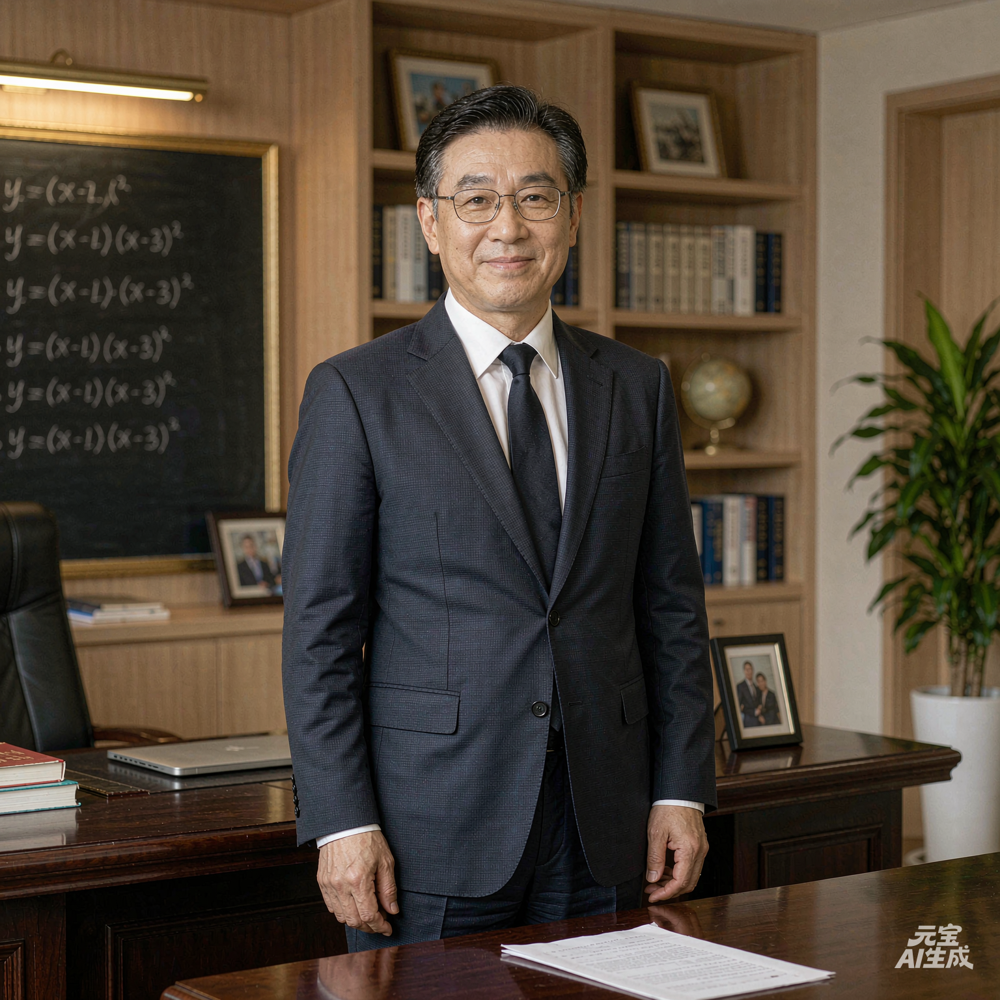
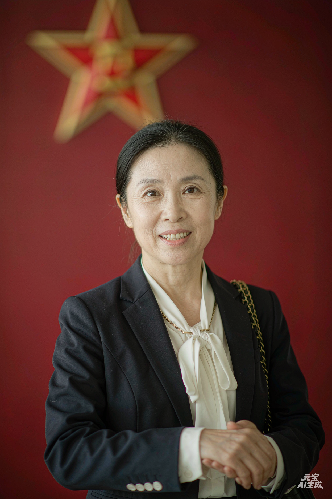
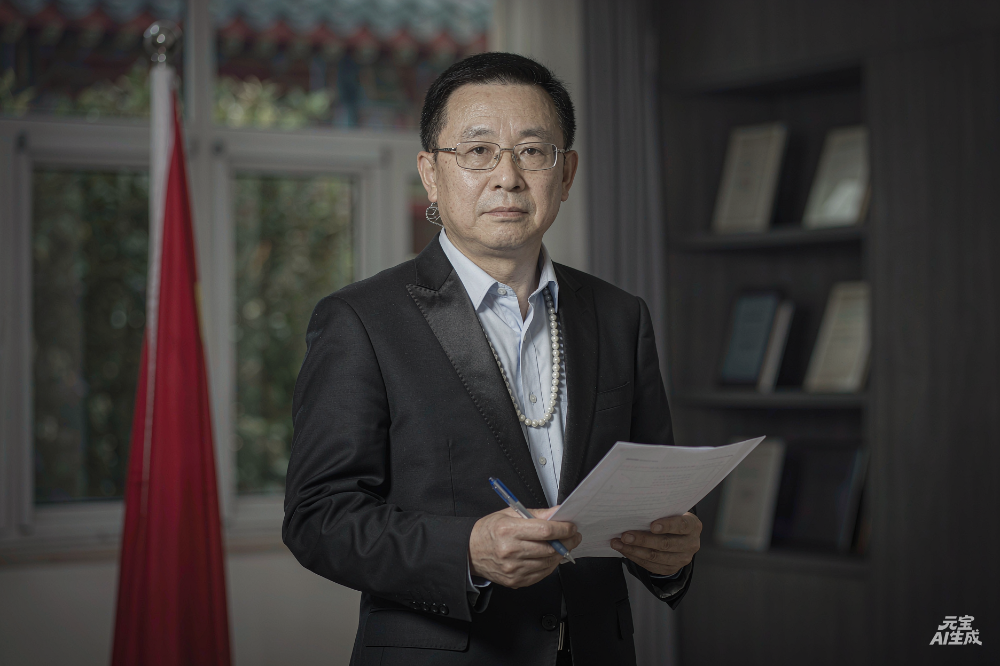
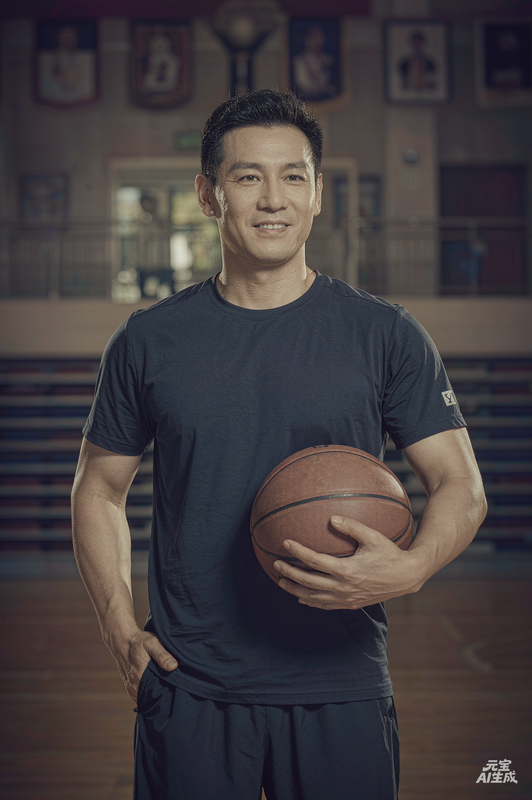

领导班子

赵建国
校长 · 党总支书记
教育管理硕士，中学高级教师。从教30年，曾获"河南省优秀教育工作者""三门峡市劳动模范"等荣誉称号。秉持"立德树人、全面发展"的办学理念，带领学校持续高质量发展。

刘红梅
副校长 · 分管教学
数学特级教师，河南省名师。长期致力于课堂教学改革，主持多项省级教研课题。分管教学工作期间，学校高考成绩连年攀升，一本上线率稳居全市第一。

陈志强
党总支副书记
中学政治高级教师，负责党建与思想政治工作。推动"党建+育人"模式创新，学校党总支多次获评"三门峡市先进基层党组织"。

孙丽娟
教务主任
语文高级教师，市级学科带头人。负责课程建设、教学管理和教师发展。主导实施"分层教学"改革，成效显著，相关经验在全省推广。

周伟
政教主任
体育教育专业出身，中学高级教师。负责学生德育、安全管理和校园文化建设。创建"五星班级"评比体系，学校德育工作获省级表彰。

吴敏
教研主任
英语特级教师，全国优秀教师。负责教研活动和教师专业成长。带领学校教研团队在国家级、省级教学成果评选中屡获佳绩。